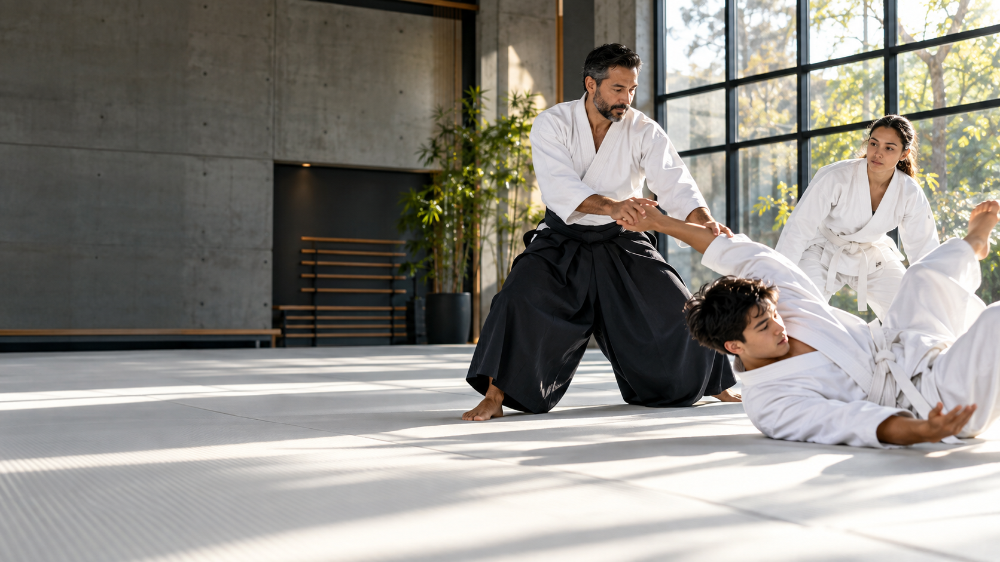
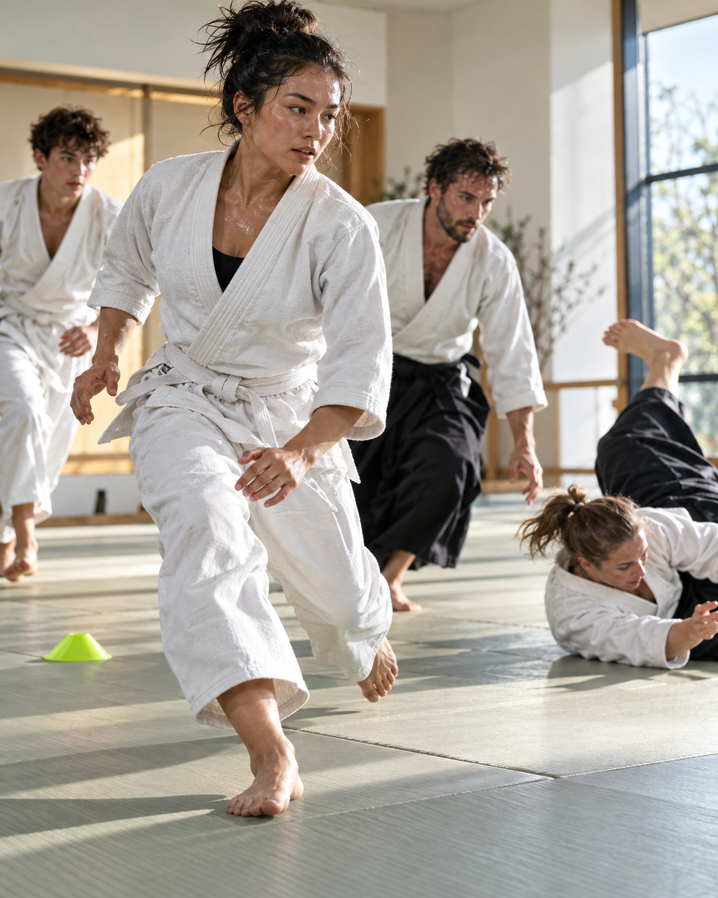
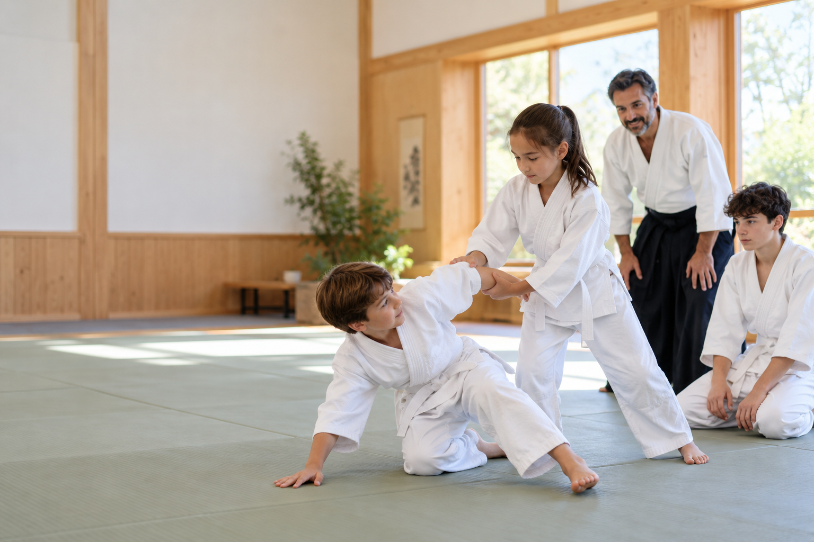
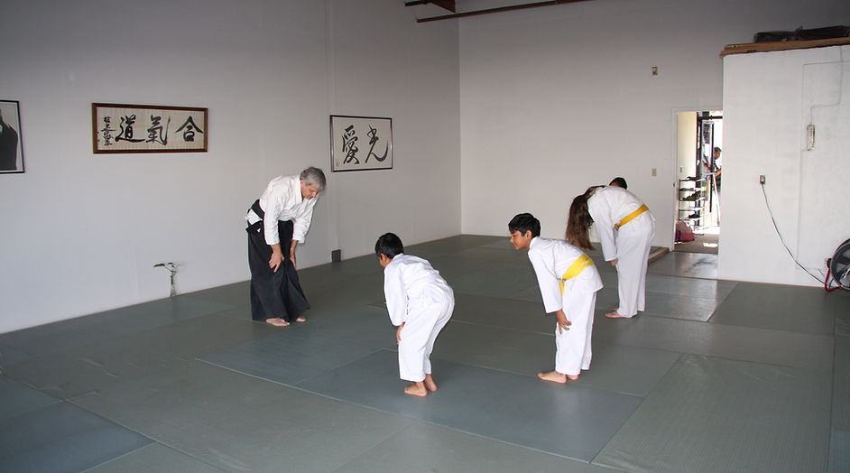
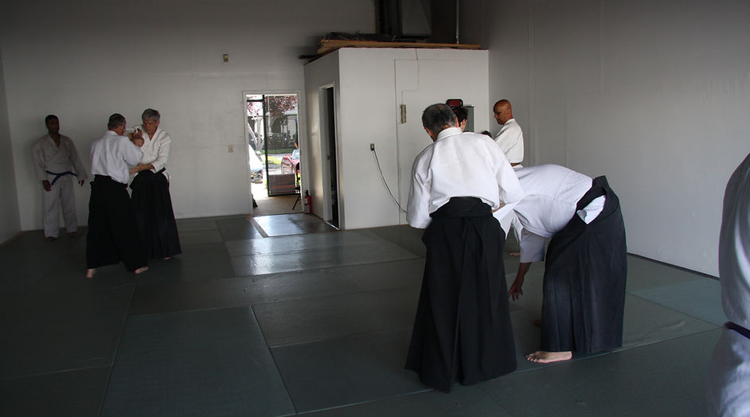
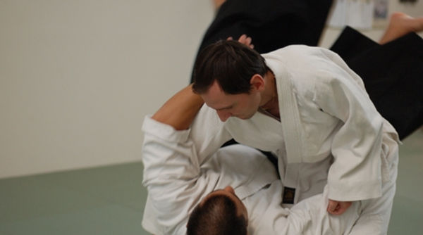

MOVE FIRST
Train distance, timing, balance, and exits—the building blocks of avoiding trouble before it escalates.
ADULT + TEEN TRAINING / FREMONT, CA

Fremont Aikido · adult + teen martial arts classes
Train your awareness, cardio, balance, and composure with a Fremont, California community that shows up ready to work.
01 / WHAT WE BUILD
It’s about moving well when your heart rate is up. Aikido gives adults and teens a demanding, partner-based practice for physical confidence and calm decision-making.
Train distance, timing, balance, and exits—the building blocks of avoiding trouble before it escalates.
Dynamic warm-ups, falls, footwork, and repeat drills keep you moving and make every class a real workout.
Practice under controlled pressure so you can think clearly, communicate, and choose a safer response.
02 / REAL CONDITIONING
Expect to sweat. Classes blend mobility, sustained partner drills, breakfalls, and full-body movement—built for people who want an athletic practice with a purpose.


03 / YOUTH PROGRAM
For parents who want more than an after-school activity: Aikido helps children and teens learn focus, respect, physical coordination, and how to stay composed when things get hard.
SAFE PARTNERSHIPStructured drills and close coaching teach young students to train with care and mutual respect.
REAL CONFIDENCEProgress comes from practice—new movement skills, stronger boundaries, and showing up for the team.
ROOM TO GROWKids ages 7–12 and teens ages 13–17 build athletic foundations at their own pace.
FROM THE FREMONT AIKIDO MAT
Real training moments from the Fremont Aikido photo collection.



04 / WEEKLY SCHEDULE
New students are welcome to observe or train at any scheduled session. Start with the class that fits your week.
Teenagers welcome · all experience levels
Children ages 7–12 · teens ages 13–17
Traditional study and training
ABOUT SELF-DEFENSE
Our training does not promise shortcuts or teach you to seek conflict. It gives you better awareness, movement, communication, and options—skills that support a safer response in the real world.
THE PEOPLE ON THE MAT
Fremont Aikido’s volunteer teaching team brings long-term study in Aikido and related martial arts to an approachable, safety-first dojo.
Martin ChristensenGodan · 60 years in Aikido
Derek TokudaYondan · Tuesday adult class
Stan ChanYondan · Adult + Saturday youth
Uyen Le · Chris Hooper · Keith Love · Steve OsawaDedicated youth and guest instruction
04 / START HERE
Get a feel for the dojo before you walk through the door.
No. Classes have beginners through advanced students. You can progress at your own pace, and partners help each other learn safely.
Yes. Teens are welcome in adult classes, in addition to the dedicated children and teen sessions. Contact us if you want help choosing a first class.
Training includes full-body movement, footwork, warm-ups, falls, and sustained partner practice. It is a demanding way to improve conditioning, coordination, and mobility.
Wear comfortable workout clothes and arrive a little early. You are welcome to observe first or participate—no experience required.
05 / JOIN THE DOJO
New student special
For three-month advance sign-ups. A one-time $5 registration fee applies; additional family members receive $10 off each month.
ASK ABOUT ENROLLING ↗Membership supports our facility. Every instructor is a volunteer.06 / THE DOJO
Visit us before or after a class, or reach out to plan your first session.
ADDRESS43210 Christy Street
Fremont, CA 94538 ↗
CALL510 738 6375